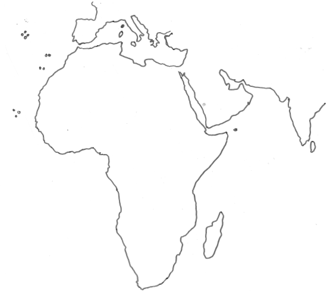

Geografia - poznámky
Obyvateľstvo sveta
- V súčasnosti žije na svete 8,3 miliárd ľudí – najvyšší počet obyvateľov v dejinách
Faktory, ktoré ovplyvňujú počet obyv. na Zemi
- Vojny, epidémie, zdravotná starostlivosť, vyspelosť štátov
Rozmiestnenie obyvateľstva
- Nerovnomerné
- Priemerná hustota obyvateľstva na Zemi je 52 obyv/km2
- Husto osídlené: mierne podnebné pásmo, oblasť okolo pobrežia, nížiny, miesta s úrodnou poľnohospodárskou pôdou, vodou a miestach ťažby nerastných surovín
- Riedko osídlené: púšte, polopúšte, vysoké pohoria, studené oblasti

75% obyv. v Eurázii
11% v Afrike
8% v Južnej Amerike
5% Sev. Amerike
1% Austrália a Oceánia
Rasová štruktúra
- Hlavné znaky – farba pokožky, črty tváre, stavba tela, farba a tvar vlasov
- Geneticko – populačné znaky
- EUROPOIDNÁ RASA (biela)
- 43%
- Svetlý odtieň pokožky, silné črty, rovné/kučeravé vlasy
- Severná amerika, Európa, Austrália, Severná Afrika
- MONGOLOIDNÁ RASA (žltá)
- 19%
- plochá tvár, šikmé oči, čierne rovné vlasy
- Žltá vetva - Ázia
- Červená vetva - indiáni, Latinská Amerika
- EKVATORIÁLNA RASA (čierna)
- 7%
- Tmavá pleť, veľké pery, čierne kučeravé vlasy, široký nos
- Od Sahary na juh
- Zvyšných 31% sú miešanci
- europoidná rasa + ekvatoriálna rasa = mulat
- europoidná rasa + mongoloidná rasa = mestic
- mongoloidná rasa + ekvatoriálna rasa = zambo
Náboženstvá
- Náboženstvo - viera človeka v určitý kult (uctievanie božstva, Boha, legenda, mýtus)
- monoteistické - viera v jedného boha
- polyteistické - viera vo viacerých bohov
Sú štyri najrozšírenejšie náboženstvá na svete:
- kresťanstvo (katolíci, protestanti) - Európa, Latinská Amerika, USA, Austrália
- islam (suniti, šiíti) - sever Afriky, JZ a JV Ázia
- budhizmus - vznikol ako reforma hinduizmu, J a JV Ázia
- hinduizmus - jedno z najstarších, J Ázia, Latinská Amerika, Afrika a v súčastnosti aj Európa
Menej rozšírené:
- šintoizmus - Japonsko
- judaizmus - Izrael
- konfucionizmus - Čína
- animizmus - primitívne vyznávanie kultu prírody (Madagaskar, rovníková Afrika, Ázia - Guinea)
Afrika ako celok
- Afrika je 3. najrozsiahlejší svetadiel po Amerike a Ázií
- rozkladá sa okolo rovníka
- prechádzajú cez ňu obidva obratníky
- cez západnú časť svetadiela prechádza 0. poludník
- veľká časť Afriky má rovnaký čas ako Slovensko
- Európu od Afriky oddeluje Gibraltársky prieliv
- Áziu od Afriky oddeluje Suezský prieplav

Senegal
Sahara
Guinejská vysočina
Adamauská vysočina
Čadská panva
Čadské jazero
Gambia
Gibraltársky prrieliv
Madagaskar
Somálksky poloostrov
Dračie vrchy
Namib
Kalahari
Kongo
Okavango
Stredozemné more
Konžská panva
Kapverdy
Malá Syrta
Veľká Syrta
Ahagar
Kongo
Atlantický
oceán
Indický oceán
Etiópska vysočina
Atlas
Kanárske ostrovy
Viktóriine vod.
Keňa
Guinejský záliv
Abenský záliv
- väčšina Afrického povrchu - náhorné plošiny
- Suezský prieplav spája stredozemné a červené more
- vnútrozemie Afriky bolo dlho zahalené tajomstvom poznali len sever Afriky
- objavovaniu vnútrozemia bránili pralesy, rieky, klíma a choroby
- Livengstone a Stanley objavovali vnútrozemie pomocou domorodcov
Povrch Afriky
- väčšina Afrického povrchu: náhorné plošiny
- najvýznamnejšou a najznámejšou črtou Afriky je že sa na východ od nej pomaly odtrháva časť pevniny - zlom pozdĺž ktorého sa Afrika rozdeluje sa nazýva Východoafrická priekopová prepadlina
- najvyššie pohorie = Kilimandžáro
- najvyšší bod afriky = Uhuru
- najnižší bod Afriky = Asalská preliačina, -155 mnm.
Podnebné pásma Afriky
Tropické rovníkové pásmo
- pri rovníku v okolí Guinejského zálivu
- teplo a vlhko (každý deň prší)
- malé teplotné rozdiely medzi dňom a nocou
Tropické vlhké podnebie s obdobiami sucha
- stredná časť Afriky a väčšinu Madadgaskaru
- striedanie obdobia dažďov (v lete) a sucha (v zime)
Tropické suché podnebie
- v oblasti obratníkov
- horúco a sucho
- veľké teplotné rozdiely medzi dňom a nocou
Subtropické podnebie
- na severnom a južnom okraji Afriky
- teplé letá, mierne zimy
Rastlinstvo a živočíšstvo Afriky
Vegetačné oblasti
- tvrdolisté vždy zelené lesy subtropického pásma - S a J Afriky, citrusy, olivy, vinič
- Rastlinstvo vysokých pohorí
- tropické púšte a polopúšte - hmyz, hady, hlodavce, vysoké výkyvy teplôt medzi dňom a nocou, oázy (miesto v púšti kde vyviera voda)
- savany - trávnaté oblasti, zebry, levy, leopardy, hyeny, slony, žirafy // baobaby a obilie
- tropické opadavé a poloopadavé lesy
- tropické dažďové pralesy - najpestrejšie rastlinstvo na zemi - Africký mahagón
Národné parky
- Serengeti
- Tsavo
- Krugerov NP
SPÄŤ